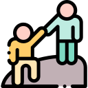

Ayuda!
Colabora!

Agradece!

Crece ayudando!

Lazarius se trata de la evolución del milagro de LAZARO (muerto al que “resucitó” Jesucristo con el famoso milagro de “Lázaro, levántate y anda”) y LAZARILLO (de la RAE: Persona o animal que guía o acompaña a otra necesitada de ayuda) ya que se convertirá en la forma de poner en contacto a gente necesitada de cualquier tipo de ayuda, consejo, recomendación… mediante un pago que considere justo en función de su necesidad.
Mas informacion